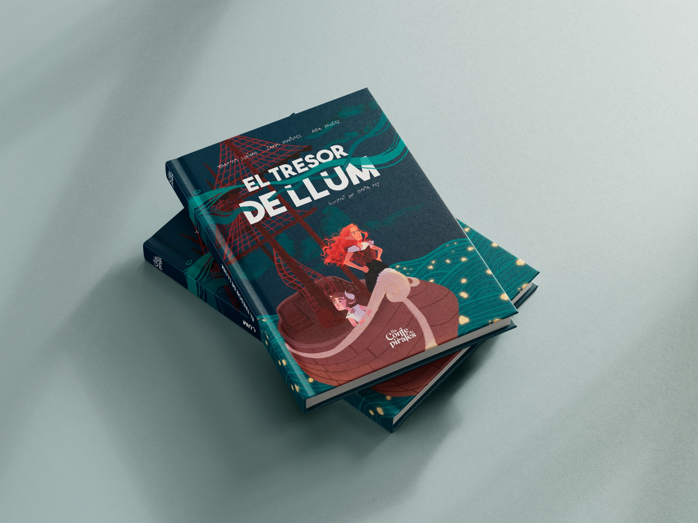

Un conte de pirates
"Un conte de pirates" is a shortfilm directed by Carla Martinez, Alba Muñoz and Marina Soriano. They contacted me for the creation of their visual identity and also for a children's tale that was shown on the shortfilm, called "El tresor de llum".
Year
My role
Software

My role was to visually bring the story to life through captivating illustrations and careful layout. I decided to develop this project as part of a design assigment for university, using digital illustration to capture the essence and charm of the tale, from the main characters to detailed landscapes and settings.
Character design
Layout and drawing process
In addition to illustrations and layout, I also collaborated closely with the directors of the shortfilm to ensure that the design and content of the children's book accurately reflected the creative and narrative vision we had in mind.
With the creation of this childrens tale I was able to improve my illustration and design skills. I learned about creating a visually stimulating and exciting experience for young readers.
Scroll to top